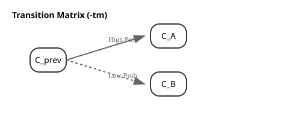

Probability & Prediction Models
To minimize search steps and accelerate target identification, GRIC integrates models to learn and forecast data patterns over time.
1. Transition Matrix Mixing (-tm)
For structured sequences (such as video scenes or cyclic processes), cluster transitions often follow
predictable patterns. The -tm <coeff> option leverages this by building a Markov-like transition model.

Mechanism
- Transition Count: The algorithm maintains a matrix
tm(from, to)counting how often clusterfromtransitions to clusterto. - Probability Mixing: When ranking candidates for the next frame, the transition probability is mixed with the standard recency probability:
[ P_{\text{mixed}}(c_j) = (1 - \text{coeff}) \cdot \text{prob}(c_j) + \text{coeff} \cdot P_{\text{trans}}(c_j) ]
- Weight (
coeff): Configured from0.0to1.0. A higher weight relies more heavily on the transition history from the previous frame.
2. Geometrical Match Probability (gprob)
When processing a frame m, GRIC compares its partial distance measurements against the history of
already processed frames k to update a Geometrical Probability gprob(m, cl) for each cluster.
The FrameInfo History
For each processed frame k, the algorithm stores:
- cluster_indices: Clusters for which distance was computed.
- distances: The corresponding measured distances.
- assignment: The final cluster ID assigned.
Computing Geometrical Match gmatch(m, k)
If frame m and a historical frame k have both measured a distance to the same cluster c,
we calculate how closely their distances match:
- Normalized Difference:
dr = |dist(m, c) - dist(k, c)| / rlim - Match Factor
fmatch(dr):- If
dr > 2.0:0.0(Triangle inequality violation; they cannot share a cluster). - If
dr <= 2.0:a - (a - b) * dr / 2 a(default 2.0): Reward for exact match (dr = 0).b(default 0.5): Penalty limit value (dr = 2).
- If
The total gmatch(m, k) is the product of fmatch(dr) over all shared clusters.
Updating gprob
For each historical frame k sharing measurements with m:
- Let target = assignment[k].
- Update: gprob(m, target) *= gmatch(m, k).
Clusters with high geometrical probability are prioritized for checking, reducing unnecessary distance computations.
3. Sequence-based Prediction (-pred)
For time-series forecasting, the -pred[len,h,n] option allows the algorithm to detect repeating sequence patterns in assignment history.
Workflow
- Pattern Identification: Read the cluster assignments of the last
lenframes (default 10). - History Scan: Scan the assignments of the last
hframes (default 1000) to find matching sequences. - Frequency Analysis: For all occurrences of the pattern, count which cluster followed them.
- Bypassed Search: The top
n(default 2) most frequent "next clusters" are checked first, bypassing the standard probability ranking entirely.
If a predicted cluster matches (dist < rlim), the frame is assigned immediately, skipping the entire
ranking and search process.